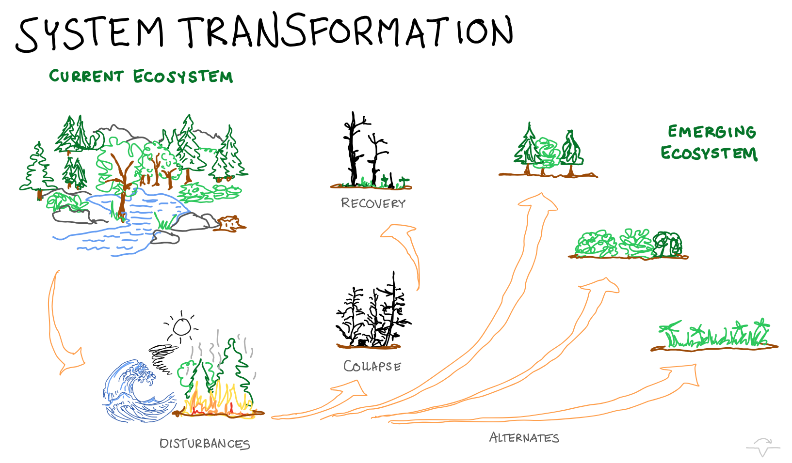

System Visualization for Systems Transformation
Frameworks for Personal Learning and Change
Abstract
The purpose of this session is to explore how visualization can support both individual and collective system transformation. For over 25 years, I’ve helped teams and organizations find clarity around complex challenges - by drawing out ideas, sketching concepts, mapping supply chains, and visualizing strategies and visions. Visuals have been tools for dialogue and change: from supporting conflict resolution between Israelis and Palestinians, to helping children in dysfunctional families imagine better futures, and Ukrainians find clarity and balance in a new country.
Over time, I've come to appreciate both simple sketches and complex visual frameworks - and I believe that everyone, young and old, can benefit from a kind of visual literacy: the ability to sketch our own and shared system maps to better understand and transform the complex systems we live in. Join this session if you want to connect the dots between simple sketches for personal clarity and larger visual maps for teams, organizations, and communities.
This session will not be recorded.
